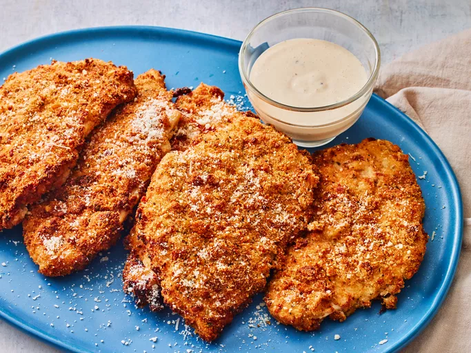

Chicken Cutlets

Description
This crispy chicken cutlets recipe takes flavor inspiration from the classic Caesar salad.
The breadcrumb mixture includes crushed croutons for added flavor and crunch, plus store
bought Caesar salad dressing is what adheres that crispy crust to the juicy chicken beneath.
It's cooked right in the air fryer for an easy dinner as is, or slice them up to serve over a
salad or in a sandwich or wrap.
Ingredients
- Seasoned croutons
- Seasoned breadcrumbs
- Parmesan cheese
- Pasta
- Lemon pepper seasoning
- Dried oregano
- Ground mustard
- Garlic powder
- Onion powder
- Cayenne powder
- Ceaser dressing
- Milk
- Cooking Spray
- 6 chicken breasts
Steps
- Gather all ingredients
- Process croutons in a food processor until finely
crumbled, around 8 ounces
- Prepare dredging station. Stir together croutons,
breadcrumbs, Parmesan cheese, lemon pepper, oregano, mustard,
garlic powder, onion powder, and cayenne in a shallow bowl.
Whisk together Caesar dressing and milk until smooth in a
separate shallow bowl. Set aside
- Preheat the air fryer to 390 degrees F for 2 minutes
(200 degrees C). Lightly coat the air fryer basket with
cooking spray
- Working with 1 cutlet at a time, fully submerge each cutlet
into dressing mixture, shaking off excess. Dredge cutlets in
crouton mixture, pressing firmly until evenly coated on both
sides. Place on a plate in an even layer
- Working in batches, add 2 cutlets to basket in one even layer,
and cook until golden brown and cooked through, 10 to 12
minutes, flipping halfway through
- Transfer to a serving platter, and repeat with remaining cutlets.
Serve with additional Parmesan cheese and dressing